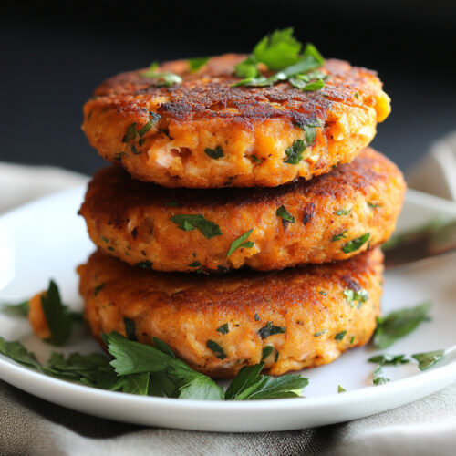

Salmon Cake

GSalmon cakes are a delicious and versatile dish that combines flaky salmon with a blend of seasonings, herbs, and binding ingredients to create crispy, golden-brown patties. The mixture is carefully formed into cakes and pan-seared until they develop a crunchy exterior while remaining moist and tender inside. A hint of citrus or a creamy sauce can enhance the flavor, adding brightness and balance to each bite. These salmon cakes can be served as an appetizer, a main course with a fresh salad, or even in a sandwich for a tasty twist. Easy to prepare and packed with protein, they make for a satisfying and flavorful meal.
p/s: This recipe is created by LazyNeko. It will be exceptionally delicious due to the extensive R&D process conducted. Please try and enjoy!
Ingredients
- 1 tablespoon extra-virgin olive oil
- 2 tablespoons minced red bell pepper
- 2 tablespoons minced celery
- salt and pepper to taste
- 1 1/4 pounds fresh wild salmon, coarsely chopped
- 1/4 cup mayonnaise
- 1/4 cup panko bread crumbs
- 2 cloves garlic, minced
- 1 teaspoon Dijon mustard
- 1 pinch cayenne pepper
- 1 pinch seafood seasoning (such as Old Bay®)
- 1 tablespoon panko bread crumbs, or to taste
- 2 tablespoons olive oil, or as needed
Steps
- Heat extra virgin olive oil in a skillet over medium heat. Cook and stir onion, red pepper, celery, and a pinch of salt in hot oil until onion is soft and translucent, about 5 minutes. Add capers; cook and stir until fragrant, about 2 minutes. Remove from heat and cool to room temperature
- Stir salmon, onion mixture, mayonnaise, 1/4 cup bread crumbs, garlic, mustard, cayenne, seafood seasoning, salt, and ground black pepper together in a bowl until well-mixed. Cover the bowl with plastic wrap and refrigerate until firmed and chilled, 1 to 2 hours.
- Form salmon mixture into four 1-inch thick patties; sprinkle remaining panko bread crumbs over each patty.
- Heat olive oil in a skillet over medium-heat. Cook patties in hot oil until golden and cooked through, 3 to 4 minutes per side.
Home